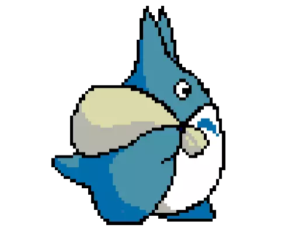
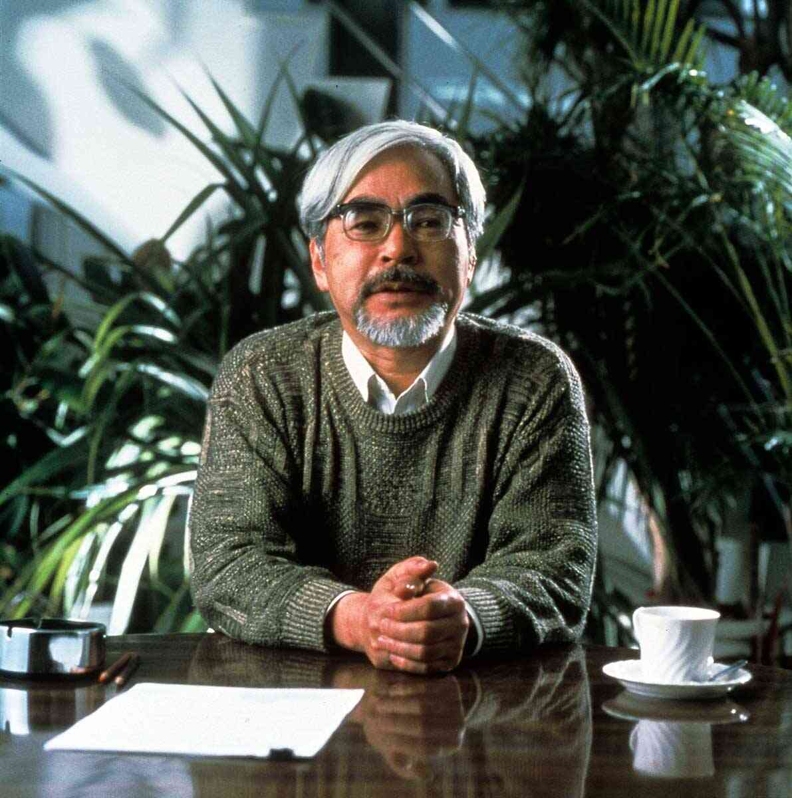

/home
/who is totoro?
/hayao miyzaki

Hi, totoro here. |
ghibli character
who is totoro?
totoro is giant, friendly forest spirit. He spends most of his time sleeping - just like me - in a
in tree. He doesn speak, instead communicating by loud bellows that, it seems, only the totoro
and the cat bus can understand. He is ftom a ghibli movie. Totoro is the other side of me.

Hayao miyzaki
Hayao miyzaki is one of japan's greatest animation directors. the entertaining
plots, compelling characters, and breathtaking animation in his films have
earned him international renown from critics as well as public recognition
within japan.
hayao miyzaki was born in tokyo on jan 5, 1941. He started his carrer in 1963
as an animator at the studio Toei Douga studio, and was subsequently involved
in many early classis of japanese animation. From beginning, he commanded
attention with his incredible drawing abilitiy and the seemingly endless
stream of movie ideas he propsed.